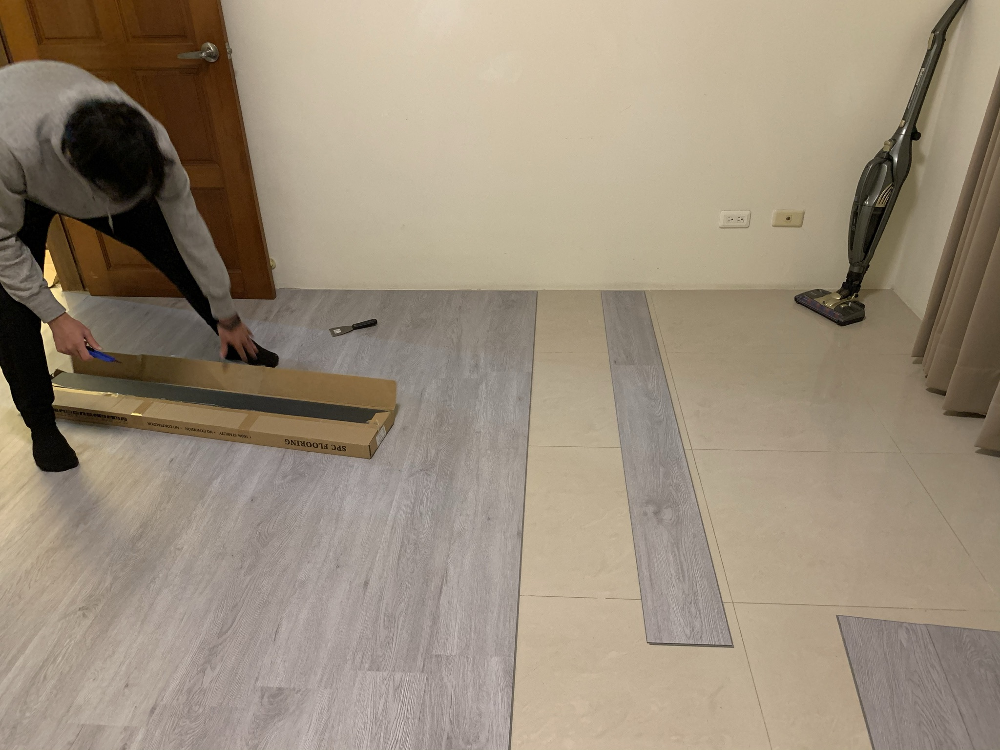
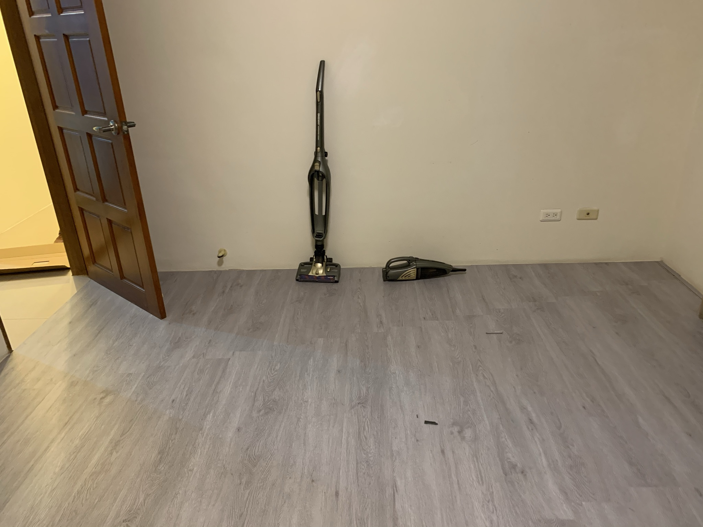
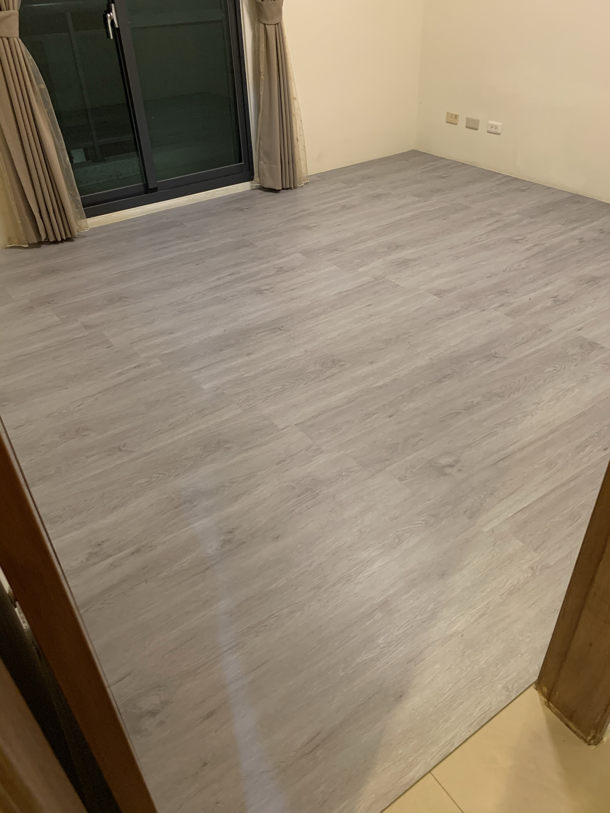

同學搬新家, 幫忙鋪木地板, 卡扣式的組合和需要特定長度時用大腿掰斷的特性很方便, 記得要多留一點Buffer, 避免過程中掰斷時不小心造成邊角裂開, 裝上去不好看, 此外, 也要注意鋪完後的高度是否會造成房間門不好開關
整條長邊接完後再一起扣到已完成的長邊會比較順, 否則會遇到木地板接角不好組合的議題

收邊用矽利康加上油漆刮刀, 之前沒用過要留意縫隙別留太大, 大約0.5~1公分即可, 不然會打到手殘, 第一次用矽利康還不太會裝, 要打得漂亮也不容易啊XD, 剛好宅水電那個時期有上一片和矽利康有關的介紹, 受益良多
鋪完後質感整個上升XD


參考